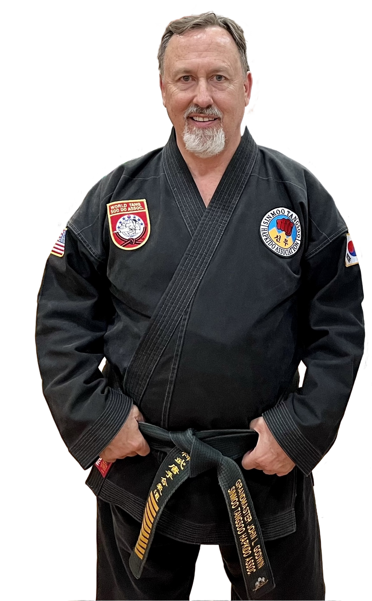

Joong Kwang Sun Sa Nim · 10th Dan, Sin Moo Hapkido · Tang Soo Kwan
John L. Godwin is one of the most senior and active practitioners of Sin Moo Hapkido in the United States, recognized for decades of direct study, teaching, and leadership within Korean martial arts. His career reflects not only technical achievement, but long-term stewardship of both Tang Soo Do and Sin Moo Hapkido traditions.
Godwin began training in southern New Jersey, studying Tang Soo Do, Moo Duk Kwan, and Hapkido under Master Ki Yun Yi. From an early stage, he distinguished himself through an intense training schedule and a commitment to both traditional forms and practical application.
In the early 1980s, he joined the World Tang Soo Do Association under Grandmaster Jae Chul Shin, becoming a full-time instructor at the organization’s headquarters. Over time, he played a key role in the growth and administration of the association while continuing to teach and develop students.
In 1986, he founded Godwin’s Korean Martial Arts Institute (KMAI), which would become a long-standing center for Tang Soo Do and Hapkido training in the region.
A defining chapter of Godwin’s career began in 1997, when he was introduced to the late Dojunim Ji Han-jae, founder of Sin Moo Hapkido. From that point forward, he undertook an unusually close and sustained course of study.
For many years, Godwin hosted regular private instructor sessions with Ji Han-jae, creating a depth of direct transmission that is rare within modern martial arts. Over time, this relationship placed him among a small group of senior practitioners recognized for both technical understanding and personal dedication to the art.
This extended period of training forms the foundation of his standing within the Sin Moo Hapkido community.
In 2014, Ji Han-jae authorized Godwin to establish Tang Soo Kwan, a recognized kwan within Sin Moo Hapkido. This authorization reflects both technical mastery and trust, as kwan holders are responsible for preserving and transmitting the art within their own lineage structure.
Through Tang Soo Kwan, Godwin integrates his deep background in Tang Soo Do with the principles and curriculum of Sin Moo Hapkido, maintaining a balance between tradition, adaptability, and continued instruction.
Beyond personal training, Godwin’s impact is most evident in his role as a teacher. Through KMAI and affiliated schools, he has developed a large body of students, including numerous black belts and instructors who continue teaching across multiple states.
His work extends internationally through seminars, demonstrations, and ongoing instruction, as well as through his role in organizing events such as the International Hapkido Summit.
Across decades of teaching, his focus has remained consistent: developing capable practitioners while preserving the integrity of the systems he represents.
In earlier stages of his career, Godwin was an active and successful competitor, earning recognition in regional and international events, including competition in South Korea. These experiences reflect the level of skill and commitment that characterized his formative years.
Today, Godwin continues to teach, mentor, and guide students within both Tang Soo Do and Sin Moo Hapkido. As a Joong Kwang Sun Sa Nim and Tang Soo Kwan holder, his role is not only that of practitioner, but of senior custodian of the art.
His career represents a continuous line of training, transmission, and instruction—linking traditional Korean martial arts to the next generation of practitioners.
